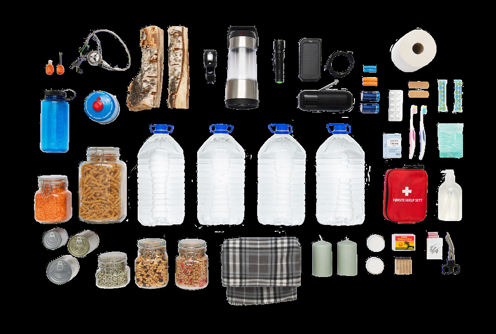

9 March, 13:15–15:15
Academic writing
Learning outcomes
- Formulate a question that the material can answer.
- Distinguish material, method, analysis and discussion.
- Use theory as an analytical tool rather than decoration.
- Separate documentation, interpretation and uncertainty.
- Use sources and AI in an auditable way.
Academic writing makes the analytical movement visible. A strong text connects a precise question, defined material, a transparent method, concepts that change what can be seen, and conclusions that do not exceed the evidence.
Begin with a question the material can answer
A research question should identify the phenomenon, the analytical purpose and an empirical boundary. “How do Norwegian authorities communicate risk?” is too broad. “How is uncertainty framed in two public preparedness campaigns published between 2024 and 2026?” identifies both material and analytical focus.
Three useful forms
Theoretical essay
Develop and test a conceptual argument through precise engagement with research. The essay still needs a question, an explicit selection of literature and a bounded conclusion.
Case analysis
Define the case, material and method. Use PRK, SOFT or FIVER only when the framework changes what the analysis can identify. A model is not evidence.
Evaluation of communication practice
State criteria before assessing performance. Separate what the communication contains, how it can reasonably be interpreted and what cannot be concluded without audience or outcome data.
Move from evidence to interpretation
A useful paragraph establishes a claim, presents observable evidence, explains the relationship and ends with a bounded interpretation. Quotations, screenshots, documents and examples must demonstrate the claim rather than decorate the text.
Make theory do analytical work
Define the concept, identify the relevant feature in the material, explain how the concept changes the interpretation, and state the limit of the inference. If a theory can be removed without changing the analysis, it is not doing analytical work.
Distinguish material, method, analysis and discussion
The material is what is studied. The method explains how it is selected and analysed. The analysis shows patterns and examples. The discussion relates findings to theory, previous research and alternative explanations. These functions may appear in different structures; IMRaD is not mandatory for every assignment.
Use generative AI without outsourcing responsibility
AI can support outlining, language revision and comparison of formulations. The student remains responsible for source retrieval, quotation accuracy, references, analytical decisions and the submitted text. Never cite a source that has not been opened and checked. Document AI use according to the course and institutional rules.
Worked example
Observation: A preparedness campaign repeatedly uses household images and imperative verbs. Evidence: Three posts show stored water, batteries and food alongside “You must be prepared”. Explanation: SOFT directs attention to framing and unequal household capacity. Interpretation: The campaign individualises preparedness, but the material alone cannot establish how audiences respond.
Paraphrase, quotation and secondary sources
A paraphrase restates a source in a new formulation while preserving its meaning and citing the source. A direct quotation reproduces the wording exactly and requires quotation marks and a page number where available. A secondary citation should be used sparingly and must make clear that the original work was not consulted directly. Prefer a DOI for scholarly publications and a stable institutional URL for web sources.
Avoid overinterpretation
- A textual pattern does not document an actor’s motive.
- Two simultaneous developments do not establish causation.
- A rhetorical analysis does not establish audience effects without audience data.
- A model organises analysis; it is not empirical evidence.
Before submission
- The research question matches the material and method.
- Every quotation and reference has been checked in the original source.
- Findings and interpretation are explicitly distinguished.
- Alternative explanations and limits are stated.
- Tables and figures have numbers, captions, sources and text alternatives.
- AI use is documented according to the current HVO rule. [Check current institutional rule before publication.]
Worked example: Framing household preparedness

DSB visualises emergency preparedness through familiar household objects: water, food, batteries, lighting, medicines and hygiene products. The image translates preparedness from an abstract societal concern into practical tasks that households can carry out.
The brochure recommends that households should be able to manage for one week. DSB connects this advice to collective preparedness: when more households manage without assistance, municipalities and emergency services can prioritise those who need help most. The material therefore frames preparedness as both personal responsibility and support for public crisis management.
A SOFT analysis also draws attention to what the image leaves out. Households differ in income, storage space, health and access to social networks. The material supports an analysis of framing, but it does not document how audiences understand or act on the advice.
Before and after revision
Before
The campaign clearly manipulates the audience by using fear, which proves that the authorities want people to obey.
After
The campaign combines imperative verbs with images of household supplies in three posts. These textual choices frame preparedness as an individual household responsibility. The material supports an interpretation of responsibilisation, but it does not document the authorities’ motive or the audience effect.
The revised paragraph identifies evidence, explains the analytical relation and limits the inference.
Model paragraph
- Claim: State the analytical point.
- Evidence: Present a quotation, visual feature, document or observed pattern.
- Explanation: Show how the evidence supports the claim.
- Interpretation: Relate the finding to the analytical concept.
- Limitation: State what the material does not establish.
Student activity
Revise one paragraph so that it moves from claim to evidence, explanation and bounded interpretation. Mark separately what the material documents, what you interpret and what remains uncertain.
Common misunderstanding
A textual pattern does not document motive. Simultaneous developments do not establish causation. Rhetorical analysis does not establish audience effects without audience data.
Expected output
A revised introduction containing a research question, material, method, analytical concepts, limitations and a source-checking plan.
Writing as a process
Academic writing rarely begins with a polished introduction. The video explains the logic of IMRaD. The story below offers a complementary way to think about drafting and revision.
Check your understanding
- What is the difference between material and method?
- When is a theory doing analytical work?
- What must be checked before a source or AI-generated claim is used?
About this resource